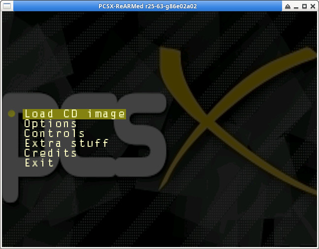

參考資訊：
https://psx.arthus.net/starting.html
https://github.com/ABelliqueux/nolibgs_hello_worlds#installation
$ sudo apt-get install gcc-mipsel-linux-gnu g++-mipsel-linux-gnu binutils-mipsel-linux-gnu $ cd $ git clone https://github.com/ABelliqueux/nolibgs_hello_worlds.git --recursive $ cd nolibgs_hello_worlds $ wget http://psx.arthus.net/sdk/Psy-Q/psyq-4.7-converted-full.7z $ 7z x psyq-4.7-converted-full.7z -o./psyq $ sudo cp -a psyq /opt/ $ sudo cp -a thirdparty/nugget/ /opt/ $ cd $ git clone https://github.com/notaz/pcsx_rearmed --recursive $ cd pcsx_rearmed/ $ ./configure $ make -j4 $ mv pcsx_rearmed_r25-63-g86e02a02 ps1 $ sudo cp -a ps1 /opt/ $ /opt/ps1/pcsx
